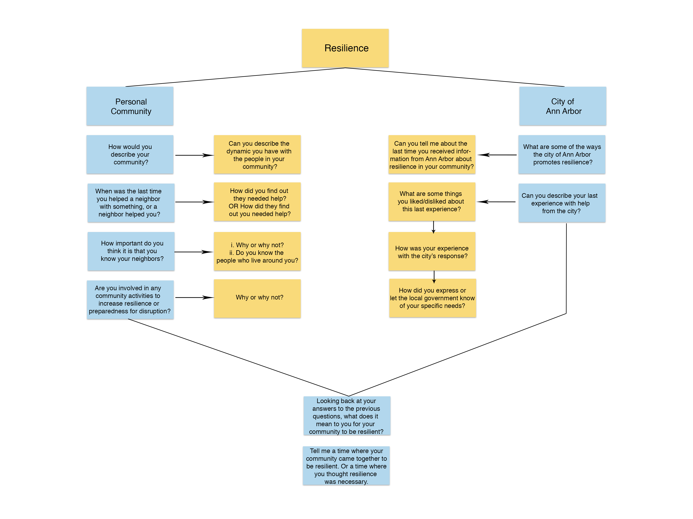
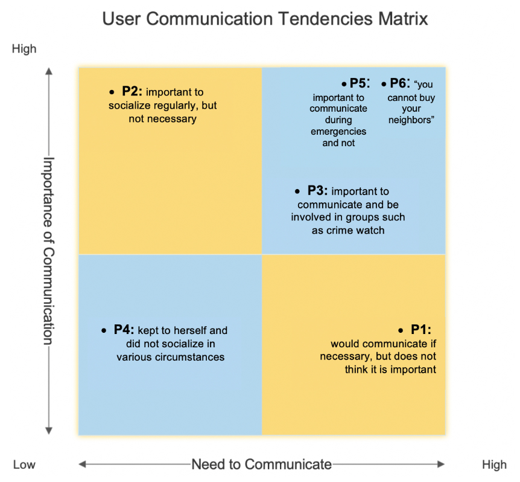
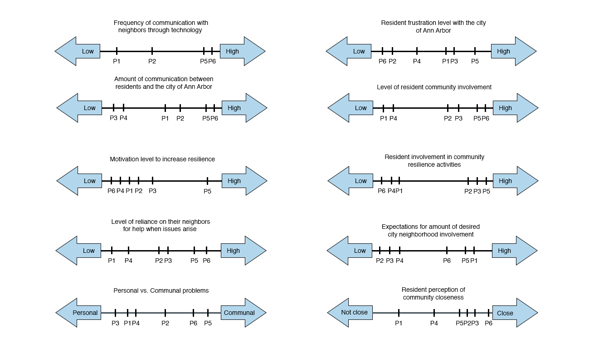
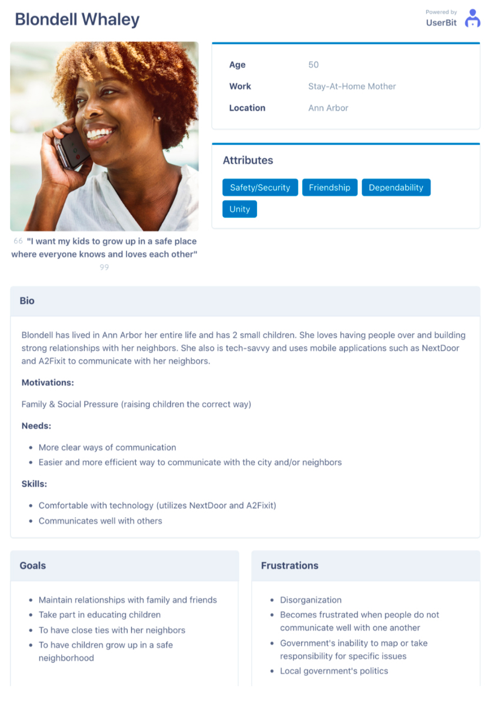
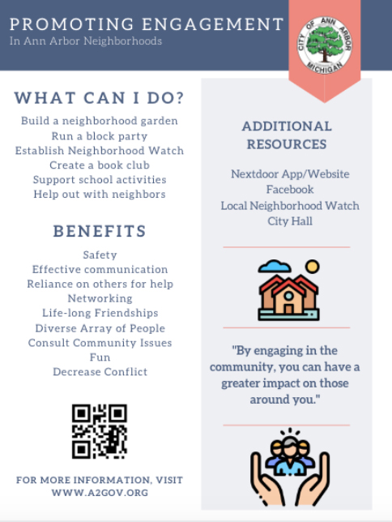
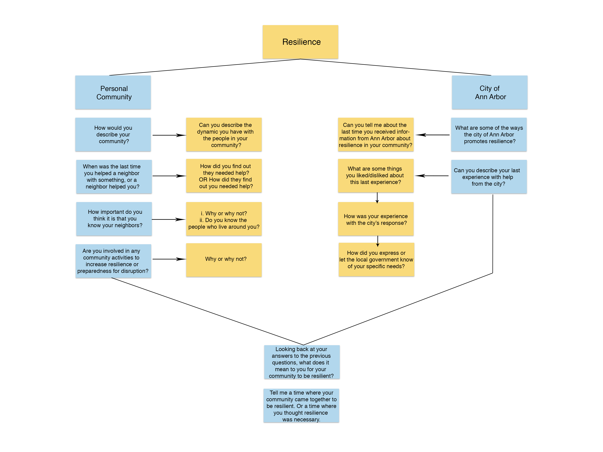
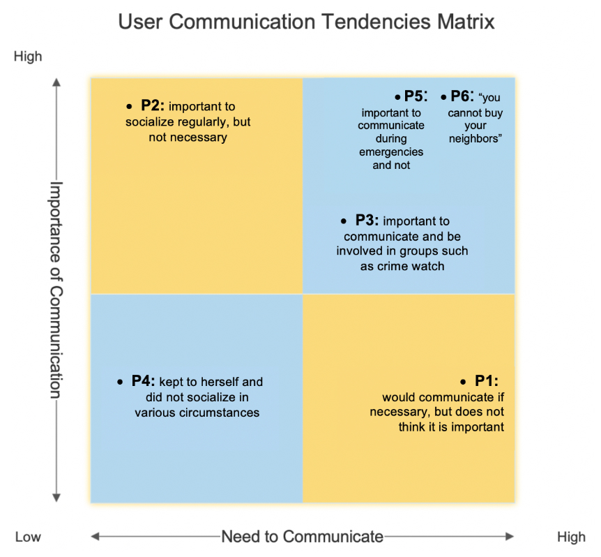
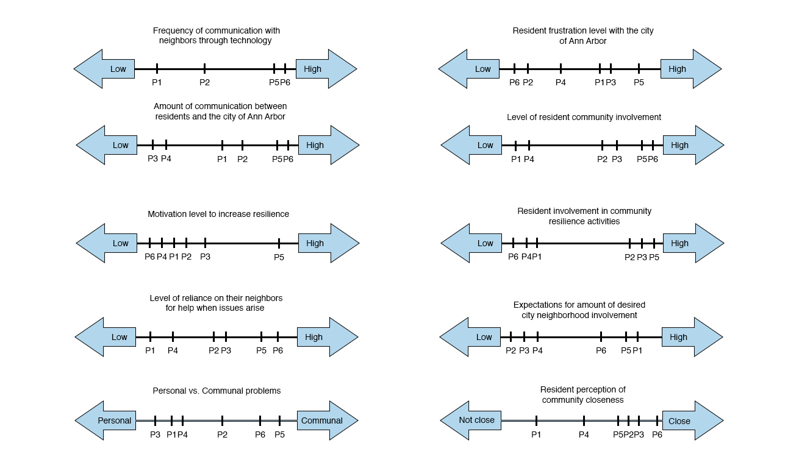
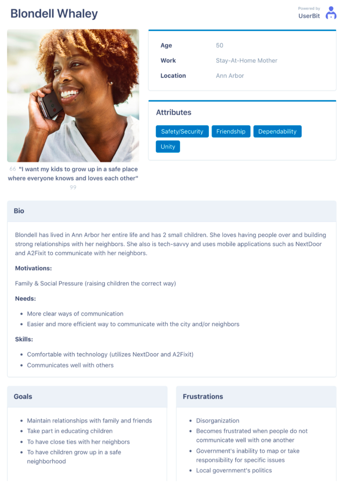
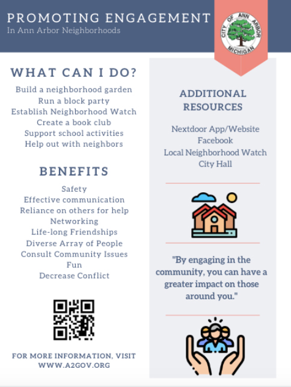

Erin Brynn
Ann Arbor User Experience Research
This past summer I had the opportunity to conduct user experience research around the city of Ann Arbor. My team conducted interviews in person by canvassing neighborhoods to find users and over the phone. We analyzed this information through using journey maps, personas and affinity walls to come up with specific recommendations for the city to improve its communication with its residents, and we presented these recommendations at the Ann Arbor City Hall. Pictures of our analysis methods and sample implementations of our recommendations can be seen below. To see our final user research report, follow this link.
 








